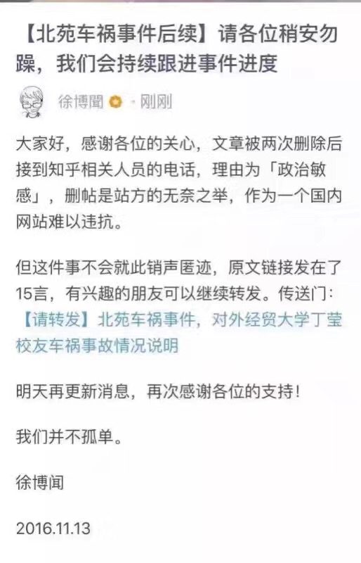
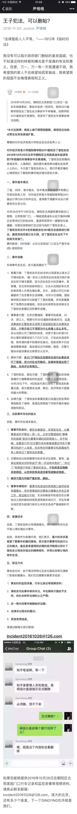

链接: https://pan点baidu点com/s/1c1VoYMO 密码: 1m93
链接: https://pan点baidu点com/s/1hsbS16k 密码: camh
把链接中的点替换成标点符号，就可以打开。里面是我目前我看到的所有文章的截图，有个别重复，因为分辨率不一样就都传上来了。两个链接，打开任意一个即可，第二个链接只是压缩包，防止网盘通过识别图片删除内容。 请把上面的文字转发到朋友圈，让更多人看到。
我没有太好的文笔，写不出什么触及人心的话，只好尽自己所能争取把信息保留下来。（之前我写过一篇推荐 App 的文章，里面写了怎么保存长图。或许以后还会遇到这种事，就提前预备着吧。）
有做程序的朋友，帮忙把内容放到 GitHub 上去了，服务器在美国，删不掉的。等他弄完，或许我还会把那个链接再放出来。
还是那句话：有些东西，不争取，永远也得不到！
下面是从不同渠道截取的几组截图。
组图一


组图二


组图三

组图四

组图五
“起初他们迫害共产党员，我没有说话，因为我不是马克思的信徒。” “后来他们迫害犹太人，我没有说话，因为我是日耳曼人。” “再后来他们迫害天主教徒，我没有说话，因为我是新教牧师。” “最后他们迫害到我头上，我环顾四周，却再也没有人能为我说话。”